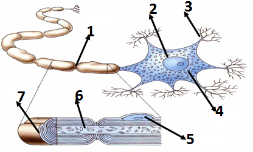
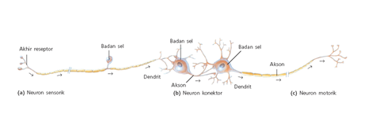
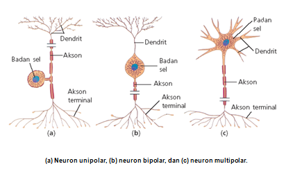
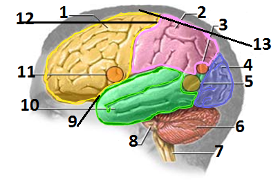
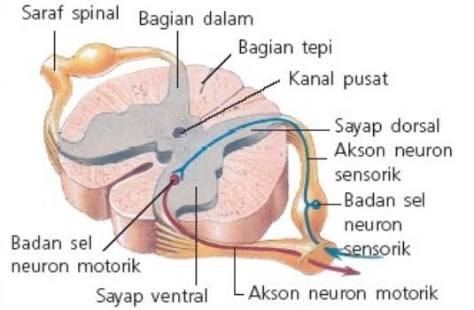

Sistem saraf adalah sistem yang mengatur dan mengendalikan semua aktivitas manusia seperti berjalan, menggerakkan tangan, mengunyah makanan dan lain sebagainya.
Sistem saraf sebagai sistem koordinasi mempunyai tiga fungsi utama, yaitu :
Pengatur atau pengendali kerja organ tubuh
Pusat pengendali tanggapan
Alat komunikasi dengan dunia luar
PEMBAGIAN SISTEM SARAF
Sistem saraf sadar, yang terdiri dari :
Sistem saraf pusat, yang terdiri atas otak dan sum-sum tulang belakang
Sistem saraf tepi, yang terdiri atas cranial dan spinal
Sistem saraf tak sadar, yang terdiri dari :
Saraf simpatik
Saraf parasimpatik
STRUKTUR SEL SARAF

Keterangan gambar :
Nodus ranvier
Inti sel
Dendrit
Badan sel saraf
Sel schwann
Akson/neurit
Selubung myelin
Dendrit, berfungsi menerima rangsang.
Badan sel (perikarion), berfungsi memproses rangsang. Badan sel mengandung badan Nissl sebagai alat sintesis protein.
Akson, berfungsi menghantarkan rangsang menuju sinapsis, dan diselubungi myelin. Ujung awal akson disebut akson hillock, dan ujung akhir akson disebut akson terminal.
Sel Schwann, merupakan sel glia (penunjang sel saraf) berupa lemak yang berfungsi menghasilkan selubung myelin.
Selubung mielin, berfungsi untuk melindungi akson dan memberi nutrisi.
Nodus Ranvier (celah), berfungsi untuk mempercepat hantaran rangsangan.
Sinapsis, berfungsi meneruskan rangsang ke sel saraf selanjutnya.
MACAM-MACAM NEURON
Berdasarkan fungsi

Keterangan gambar :
Neuron sensorik, yaitu neuron yang berfungsi menghantarkan rangsangan dari reseptor (penerima rangsangan) ke sumsum tulang belakang
Neuron konektor (penghubung), yaitu neuron yang berfungsi sebagai penghubung sel saraf yang satu dengan sel saraf yang lain neuron ini banyak terdapat di otak dan sumsum tulang belakang yang terdiri dari:
Neuron konektor : penghubung abtar sel saraf sejenisnya
Neuron adjustor : penghubung saraf sensorik dan motorik
Neuron motorik, yaitu neuron yang berfungsi membawa respon dari susunan saraf pusat ke efektor
Berdasarkan bentuk

Keterangan gambar :
Neuron unipolar, yaitu neuron yang memiliki satu akson yang bercabang, banyak ditemukan pada saraf sensorik dan reseptor alat indra
Neuron bipolar, yaitu neuron yang memiliki satu akson dan satu dendrit, banyak ditemukan pada reseptor telinga, mata dan hidung
Neuron multipolar, yaitu neuron yang memiliki satu akson dan sejumlah dendrit, banyak ditemukan pada saraf motorik dan saraf penghubung
PRINSIP PENGHANTARAN IMPULS
Rangsangan/impuls adalah suatu perubahan yang diterima tubuh baik dari luar atau dalam, sel saraf mengantar impuls dalam bentuk listrik. Sistem saraf berfungsi memproses rangsangan yang diterima reseptor untuk meneruskan hasil olahan rangsangan menuju efektor.
Mekanisme pengantar lewat sel saraf:
SUSUNAN SISTEM SARAF
Sistem saraf sadar (somatik) yang terdiri atas :
Sistem saraf pusat ,
yang terdiri atas (otak dan sumsum tulang belakang), yang dilindungi rangka berupa tengkorak (otak) dan ruas ruas tulang belakang (sumsung tulang belakang) dan tersambung oleh balok otak dan rongga disebut ventrikel, berisi cairan getah bening yang disebut cairan cerebrospinal
Otak adalah organ yang bertanggng jawab sebagai pusat koordinasi tubuh
Struktur otak

Keterangan gambar :
Lobus frontal
Lobus parietal
Area membaca
Lobus oksipital
Rangsangan untuk berbicara
Otak kecil
Medula oblongata
Pons
Fisura silvius
Lobus temporal
Kemampuan berbicara
Fisura rolando
Selaput otak
Selaput otak (meninges kranial) tersusun atas :
Durameter, yaitu selaput terluar yang kuat dan melekat pada tulang tengkorak dalam
Arakhnoid, yaitu lapisan yang berda di tengah menyerupai sarang laba-laba yang melapisi piameter
Piameter, yaitu lapisan terdalam dan paling tipis melekat pada permukaan otak dan banyak mengandung pembuluh darah
Ruang subarakhnoid, yaitu ruang yang berisi cairan pelindung yang disebut serebrospinal
Otak terdiri atas :
Otak besar.
Ciri-ciri :
Memiliki permukaan yang berlipat-lipat
Mengandung berjuta neuron
Korteks serebrum berwarna abu-abu yang disebut substansi grissea
Medula berwarna putih yang disebut substansia alba. Substansia alba terdiri dari akson dan dendrit
Serebrum terdiri :
Lobus frontalis (bagian dahi), yaitu bagian yang berperan dalam pengendalian gerak otot motorik dan bagian yang berperan dalam pengendalian saraf sensorik
Lobus temporalis (bagian pelipis), yaitu bagian yang berperan dalam sistem pendengaran
Lobus oksipitalis (bagian belakang kepala), yaitu bagian yang berperan dalam sistem penglihatan
Lobus parietalis (bagian ubun-ubun), yaitu bagian yang terbentuk karena adanya suatu lekukan, peka terhadap perubahan yang berhubungan dengan panas, dingin, tekanan dan sentuhan pada alat indra di kulit
Antara bagian dahi dan bagian ubun-ubun dipisahkan oleh celah yang disebut fisura rolando.
Antara bagian lobus dahi dan lobus pelipis dipisahkan oleh celah yang disebut fisura silvius
Otak tengah, yaitu bagian yang berperan dalam refleks mata membuat pergerakan mata, mengangkat kelopak mata, memutar mata, pusat pergerakan mata serta kontraksi otot yang terus-menerus
Otak depan yang terdiri atas :
Talamus, yaitu berfungsi menerima semua rangsangan yang berasal dari reseptor (kecuali bau) ke area sensorik serebrum, serta melakukan persepsi rasa sakit dan rasa menyenangkan
Hipotalamus, yaitu pusat koordinasi sistem saraf otonom.
Fungsi hipotalamus :
Mengatur suhu tubuh
Mengatur rasa lapar
Mengatur rasa mengantuk (dengan memerintahkan kelenjar pituitari mengeluarkan melatonin yang merupakan hormon mengantuk yang keluar pada saat gelap)
Mengatur emosi
Mengatur kadar air dalam tubuh
Mengatur kegiatan reproduksi
Mengatur tekanan darah
Mengatur kadar gula dalam darah
Otak kecil, yaitu terletak di bagian belakang di bawah otak besar. Berfungsi untuk mengoordinasikan kerja otot, tonus otot, keseimbangan dan posisi tubuh
Jembatan varol (pons varoli), yaitu serabut saraf yang menghubungkan otak kecil bagian kiri dan kanan, serta menghubungkan otak besar dengan sumsum tulang belakang
Medula oblongata, yaitu menghubungkan otak dengan sumsum tulang belakang
Fungsi : mengatur denyut jantung, penyempitan pembuluh darah, gerakan menelan, batuk, bersin, bersendawa dan muntah.
Bagian sumsum lanjutan yang menghubungkan sumsum tulang belakang dan otak disebut pons yang berperan dalam mengatur pernapasan
Sumsum tulang belakang, yaitu terletak memanjang dalam rongga tulang belakang hingga di antara ruas tulang belakang. Di bagian tengah berkas saraf ini terdapat saluran yang berisi cairan serebrospinal.
Sumsum tulang belakang berperan dalam terjadinya gerak refleks. sumsung tulang belakang terbagi 2 yaitu lapiasan luar dan lapisan dalam.
Lapisan luar: bewarna putih, bnyak mengandung akson yang dilindungi meilin, berfungsi mengantarkan impuls ke otak, dari otak ke efektor.
Lapisan dalam :bewarna kelabu, banyak mengandung serabut saraf yang tidak di lindungi meilin, lapisan dalam dibedakan menjadi dua yaitu: dorsal mengndung neuron sensorik dan ventral mengandung neuron motorik.

Sistem saraf tepi
Berdasarkan fungsinya terbagi :
Sistem saraf aferen, yaitu lanjutan saraf yang membawa impuls saraf dari reseptor ke susunan saraf pusat
Sistem saraf eferen, yaitu lanjutan saraf yang membawa impuls saraf dari sistem saraf pusat ke efektor
Berdasarkan susunan dibedakan menjadi
Saraf otak (kranial), yaitu saraf yang berjumlah 12 pasang dan terbagi menjadi 3 kelompok
Saraf yang bersifat sensorik saja, yaitu saraf olfaktori, saraf optik dan saraf auditori
Saraf yang bersifat motorik saja, yaitu saraf okulomotor, saraf troklear, saraf abdusen, saraf asensorispinal dan saraf hipoglosal
Saraf yang bersifat sensorik dan motorik, yaitu saraf trigeminal, saraf fasial, saraf glosofaring dan saraf vagus
Saraf tulang belakang, yaitu saraf yang berjumlah 31 pasang dengan ciri-ciri:
Merupakan gabungan antara saraf sensorik yang masuk ke akar dorsal dan saraf motorik yang keluar dari akar ventral
Merupakan lanjutan dari sumsum lanjutan (medula oblongata) hingga ke vertebra lumbalis kedua
Sistem saraf tak sadar ( otonom ), yaitu saraf yang mengendalikan gerak organ-organ dalam secara otomatis.
Terdiri atas :
Saraf simpatik, yaitu saraf yang berpangkal pada sumsum tulang belakang di daerah dada dan pinggang
Saraf simpatik berfungsi memacu atau mempercepat kerja organ-organ tubuh
Saraf parasimpatik, yaitu saraf yang berpangkal pada sumsum lanjutan (medula oblongata)dan dari sakrum yang merupakan saraf preganglion dan postganglion.
Fungsi saraf parasimpatik adalah menghambat kerja organ-organ tubuh
GERAK PADA SARAF
Gerak biasa, yaitu gerak yang terjadi karena disadari atau disengaja
Skema gerak biasa
Impuls → reseptor → neuron sensoris → sumsum tulang belakang→ pusat saraf →sumsum tulang belakang→ neuron motoris → efektor → tanggapan
Gerak refleks, yaitu gerak yang tidak disadari, dimana respon atau tanggapan yang terjadi berlangsung cepat dan spontan
Skema gerak refleks
Impuls → reseptor → neuron sensoris → sumsum tulang belakang → neuron motoris → efektor →tanggapan
GANGGUAN SISTEM SARAF
Meningitis, yaitu peradangan di bagian selaput otak yang disebabkan oleh bakteri atau virus
Neoritis, yaitu gangguan pada saraf tepi yang disebabkan adanya peradangan, keracunan ataupun tekanan
Parkinson, yaitu penyakit kemunduran otak akibat kerusakan bagian otak yang mengendalikan gerakan otot
Gegar otak, yaitu gangguan pada otak akibat benturan pada kepala
Strok, yaitu kerusakan otak akibat tersumbatnya atau pecahnya pembuluh darah otak
Migrain, kurangnya suplai oksigen pada salah satu bagian otak.
Amnesia, ketidakmampuan mengingat hal yang telah terjadi akibat cedera otak
Multiple sclerosis, degenerasi sel saraf pada sistem saraf pusat.
Hidrosefalus, kelebihan cairan cerebrospinal di otak yang menyebabkan pembesaran kepala.
Epilepsi (ayan), tidak dapatnya sistem saraf merespon rangsangan atau efektor yang bekerja tanpa diperintah/dikontrol. Epilepsi disebabkan oleh kerusakan otak karena munculnya jaringan parut otak sewaktu kelahiran, tumor, infeksi, kelainan metabolisme, dan kecelakaan.